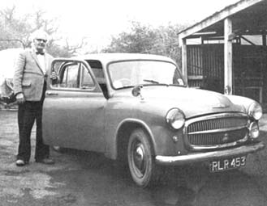

Who needs a tiger in their tank? Harold Bate, chicken farmer and inventor from Devonshire, England says that you can power your motor vehicles with droppings from chickens, pigs or any other animal of your choice . . . even with your own waste! To prove his statement is no idle boast, Harold has been operating a 1953 Hillman and a, five-ton truck on methane gas generated by decomposing pig and chicken manure for years. He claims that the equivalent of a gallon of high-test gasoline costs him only about 3¢ and that the low-cost methane makes his vehicles run faster, cleaner and better than they operate on "store bought" fuel. Mr. Bate stands beside his famous Hillman in the photo above.